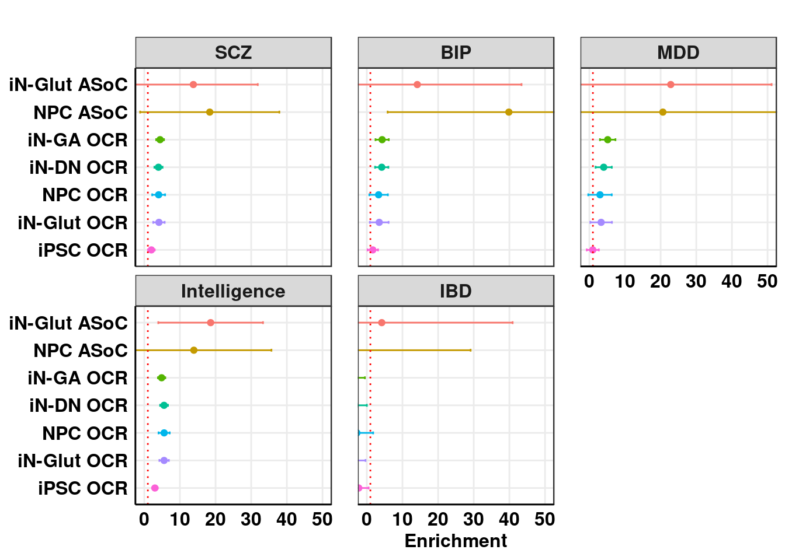
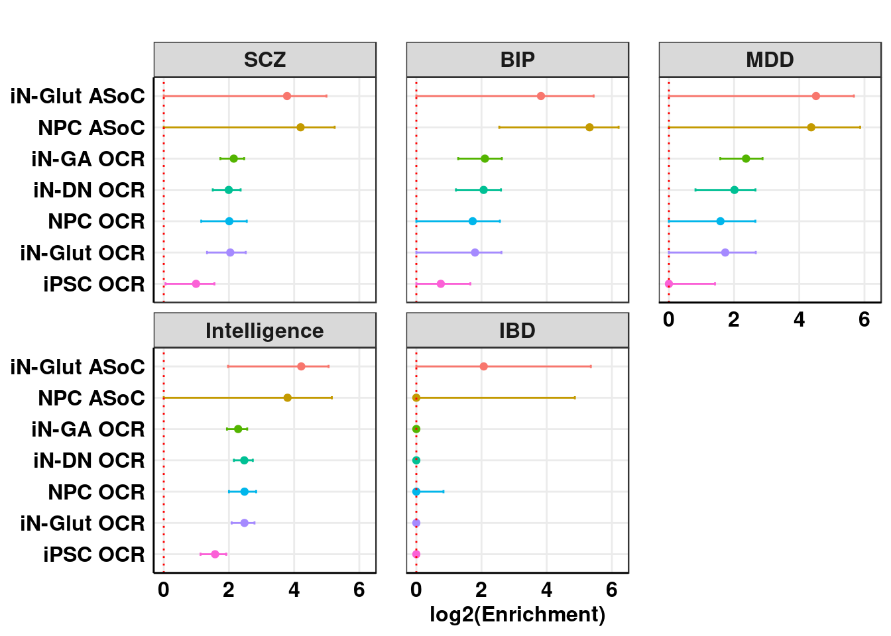

Last updated: 2020-07-08
Checks: 7 0
Knit directory: analysis_pipelines/
This reproducible R Markdown analysis was created with workflowr (version 1.6.2). The Checks tab describes the reproducibility checks that were applied when the results were created. The Past versions tab lists the development history.
Great! Since the R Markdown file has been committed to the Git repository, you know the exact version of the code that produced these results.
Great job! The global environment was empty. Objects defined in the global environment can affect the analysis in your R Markdown file in unknown ways. For reproduciblity it’s best to always run the code in an empty environment.
The command set.seed(20200524) was run prior to running the code in the R Markdown file. Setting a seed ensures that any results that rely on randomness, e.g. subsampling or permutations, are reproducible.
Great job! Recording the operating system, R version, and package versions is critical for reproducibility.
Nice! There were no cached chunks for this analysis, so you can be confident that you successfully produced the results during this run.
Great job! Using relative paths to the files within your workflowr project makes it easier to run your code on other machines.
Great! You are using Git for version control. Tracking code development and connecting the code version to the results is critical for reproducibility.
The results in this page were generated with repository version aa4aa09. See the Past versions tab to see a history of the changes made to the R Markdown and HTML files.
Note that you need to be careful to ensure that all relevant files for the analysis have been committed to Git prior to generating the results (you can use wflow_publish or wflow_git_commit). workflowr only checks the R Markdown file, but you know if there are other scripts or data files that it depends on. Below is the status of the Git repository when the results were generated:
Ignored files:
Ignored: .Rhistory
Ignored: .Rproj.user/
Unstaged changes:
Modified: analysis/sldsc_example_GTEx_QTLs.Rmd
Note that any generated files, e.g. HTML, png, CSS, etc., are not included in this status report because it is ok for generated content to have uncommitted changes.
These are the previous versions of the repository in which changes were made to the R Markdown (analysis/sldsc_example_neuron_ATACseq.Rmd) and HTML (docs/sldsc_example_neuron_ATACseq.html) files. If you’ve configured a remote Git repository (see ?wflow_git_remote), click on the hyperlinks in the table below to view the files as they were in that past version.
| File | Version | Author | Date | Message |
|---|---|---|---|---|
| Rmd | aa4aa09 | kevinlkx | 2020-07-08 | wflow_publish(“analysis/sldsc_example_neuron_ATACseq.Rmd”) |
| html | 5c9cebf | kevinlkx | 2020-07-08 | Build site. |
| html | 4d8d289 | kevinlkx | 2020-07-08 | Build site. |
| Rmd | 58daf6f | kevinlkx | 2020-07-08 | wflow_publish(“analysis/sldsc_example_neuron_ATACseq.Rmd”) |
| html | 0334665 | kevinlkx | 2020-07-08 | Build site. |
| Rmd | e2d7904 | kevinlkx | 2020-07-08 | wflow_publish(“analysis/sldsc_example_neuron_ATACseq.Rmd”) |
| html | 271e341 | kevinlkx | 2020-07-08 | Build site. |
| Rmd | 54180ee | kevinlkx | 2020-07-08 | wflow_publish(“analysis/sldsc_example_neuron_ATACseq.Rmd”) |
| html | 688b484 | kevinlkx | 2020-07-08 | Build site. |
| Rmd | 43a0953 | kevinlkx | 2020-07-08 | wflow_publish(“analysis/sldsc_example_neuron_ATACseq.Rmd”) |
| html | d048279 | kevinlkx | 2020-07-08 | Build site. |
| Rmd | e83e682 | kevinlkx | 2020-07-08 | wflow_publish(“analysis/sldsc_example_neuron_ATACseq.Rmd”) |
| html | 588df2f | kevinlkx | 2020-07-08 | Build site. |
| Rmd | 2588e9d | kevinlkx | 2020-07-08 | wflow_publish(“analysis/sldsc_example_neuron_ATACseq.Rmd”) |
| html | 1ba32ea | kevinlkx | 2020-07-08 | Build site. |
| Rmd | 97bc801 | kevinlkx | 2020-07-08 | wflow_publish(“analysis/sldsc_example_neuron_ATACseq.Rmd”) |
This tutorial shows an example analysis using S-LDSC analysis to estimate the enrichment of GWAS variants in neuron ATAC-seq annotations: open chromatin regions (OCR) and allele-specific open chromatin (ASoC) variants. The analysis uses data from our paper: Zhang et al. Allele-specific open chromatin in human iPSC neurons elucidates functional noncoding disease variants. Science 2020.
/project2/xinhe/kevinluo/ldsc/annot/annot_bed//project2/xinhe/kevinluo/ldsc/annot/annot_bed/.## Prepare ASoC binary annotations in BED format for LDSC analysis
dir_annot_bed <- "/project2/xinhe/kevinluo/ldsc/annot/annot_bed/"
### ASoC_glut_anno_hg19
annot_name <- "ASoC_glut_anno_hg19"
annot_filename <- "ASoC_glut_anno_hg19.txt"
ASoC_annot <- read.table(paste0(dir_annot_bed, "/", annot_filename), header = F, stringsAsFactors = F)
colnames(ASoC_annot) <- c("chr", "SNP_POS", "annot")
ASoC_sig <- ASoC_annot[ASoC_annot$annot == 1, ]
ASoC_sig.bed <- data.frame(chr = ASoC_sig$chr, start = ASoC_sig$SNP_POS - 1, end = ASoC_sig$SNP_POS)
ASoC_sig.bed$chr <- factor(ASoC_sig.bed$chr, levels = paste0("chr", 1:22))
ASoC_sig.bed <- ASoC_sig.bed[order(ASoC_sig.bed$chr, ASoC_sig.bed$start), ]
ASoC_sig.bed <- unique(ASoC_sig.bed)
cat(nrow(ASoC_sig.bed), "SNPs with annotation:", annot_name, "\n")
write.table(ASoC_sig.bed, paste0(dir_annot_bed, "/", annot_name, ".bed"), sep = "\t", col.names = F, row.names = F, quote = F)
### ASoC_npc_anno_hg19
annot_name <- "ASoC_npc_anno_hg19"
annot_filename <- "ASoC_npc_anno_hg19.txt"
ASoC_annot <- read.table(paste0(dir_annot_bed, "/", annot_filename), header = F, stringsAsFactors = F)
colnames(ASoC_annot) <- c("chr", "SNP_POS", "annot")
ASoC_sig <- ASoC_annot[ASoC_annot$annot == 1, ]
ASoC_sig.bed <- data.frame(chr = ASoC_sig$chr, start = ASoC_sig$SNP_POS - 1, end = ASoC_sig$SNP_POS)
ASoC_sig.bed$chr <- factor(ASoC_sig.bed$chr, levels = paste0("chr", 1:22))
ASoC_sig.bed <- ASoC_sig.bed[order(ASoC_sig.bed$chr, ASoC_sig.bed$start), ]
ASoC_sig.bed <- unique(ASoC_sig.bed)
cat(nrow(ASoC_sig.bed), "SNPs with annotation:", annot_name, "\n")
write.table(ASoC_sig.bed, paste0(dir_annot_bed, "/", annot_name, ".bed"), sep = "\t", col.names = F, row.names = F, quote = F)The following code generates ldsc-friendly annotation files (annot.gz) from the annotation BED files, then computes LD scores with the annot file (annot.gz).
## Compute LD scores for ATAC-seq peak annotations
dir_code=~/projects/analysis_pipelines/code/
sbatch ${dir_code}/ldsc_binary_annot_QTL.sbatch CN_all_peaks.narrowPeak.cleaned.hg19.merged
sbatch ${dir_code}/ldsc_binary_annot_QTL.sbatch DN_all_peaks.narrowPeak.cleaned.hg19.merged
sbatch ${dir_code}/ldsc_binary_annot_QTL.sbatch GA_all_peaks.narrowPeak.cleaned.hg19.merged
sbatch ${dir_code}/ldsc_binary_annot_QTL.sbatch ips_all_peaks.narrowPeak.cleaned.hg19.merged
sbatch ${dir_code}/ldsc_binary_annot_QTL.sbatch NSC_all_peaks.narrowPeak.cleaned.hg19.merged
sbatch ${dir_code}/ldsc_binary_annot_QTL.sbatch NSC_all_peaks.narrowPeak.cleaned.hg19.merged
## Compute LD scores for ASoC annotations
sbatch ${dir_code}/ldsc_binary_annot_QTL.sbatch ASoC_glut_anno_hg19
sbatch ${dir_code}/ldsc_binary_annot_QTL.sbatch ASoC_npc_anno_hg19
Computed LD scores for ATAC-seq peaks and ASoC annotations can be found in /project2/xinhe/kevinluo/ldsc/annot/ldscores/.
https://github.com/bulik/ldsc/wiki/Partitioned-Heritability
Convert GWAS summary statistics to the .sumstats format using munge_sumstats.py
See this page for details
Converted GWAS summary statistics (LDSC format) are available in /project2/xinhe/kevinluo/GWAS/GWAS_summary_stats/GWAS_from_Min/ldsc_format/
The following code estimates the partitioned heritability and enrichment for annotations
#!/bin/bash
#SBATCH --job-name=sldsc
#SBATCH --output=sldsc_%J.out
#SBATCH --error=sldsc_%J.err
#SBATCH --partition=broadwl
#SBATCH --mem=10G
dir_GWAS=$1
trait=$2
prefix_annot=$3
dir_sLDSC_output=$4
dir_LDSC=/project2/xinhe/kevinluo/ldsc
dir_ldsc_annot=/project2/xinhe/kevinluo/ldsc/annot/ldscores
dir_baselineLD=/project2/xinhe/kevinluo/ldsc/LDSCORE/1000G_Phase3_baselineLD_v1.1_ldscores
conda activate ldsc
echo "GWAS trait: ${trait}"
dir_out=${dir_sLDSC_output}/${trait}/baselineLDv1.1
mkdir -p ${dir_out}
python $HOME/softwares/ldsc/ldsc.py \
--h2 ${dir_GWAS}/${trait}.sumstats.gz \
--ref-ld-chr ${dir_baselineLD}/baselineLD.,${dir_ldsc_annot}/${prefix_annot}/${prefix_annot}. \
--frqfile-chr ${dir_LDSC}/LDSCORE/1000G_Phase3_frq/1000G.EUR.QC. \
--w-ld-chr ${dir_LDSC}/LDSCORE/1000G_Phase3_weights_hm3_no_MHC/weights.hm3_noMHC. \
--overlap-annot --print-cov --print-coefficients --print-delete-vals \
--out ${dir_out}/${trait}_${prefix_annot}_baselineLDv1.1
Run S-LDSC across a number of GWAS traits over the ATAC-seq peaks and ASoC annotations.
Results are saved in /project2/xinhe/kevinluo/ldsc/results/sLDSC_neuron_ATACseq_examples/
TRAITS=("ADHD" "IBD" "BMI" "height" "SCZ" "BIP" "MDD" "iPSYCH_ASD" "Intelligence" "Education" "Neuroticism" "Alzheimer" "Parkinson")
dir_GWAS=/project2/xinhe/kevinluo/GWAS/GWAS_summary_stats/GWAS_from_Min/ldsc_format/
dir_sLDSC_output=/project2/xinhe/kevinluo/ldsc/results/sLDSC_neuron_ATACseq_examples/
dir_code=~/projects/analysis_pipelines/code/
for trait in "${TRAITS[@]}"
do
sbatch ${dir_code}/sldsc_annot_baselineLD_separate.sbatch ${dir_GWAS} ${trait} CN_all_peaks.narrowPeak.cleaned.hg19.merged ${dir_sLDSC_output}
sbatch ${dir_code}/sldsc_annot_baselineLD_separate.sbatch ${dir_GWAS} ${trait} DN_all_peaks.narrowPeak.cleaned.hg19.merged ${dir_sLDSC_output}
sbatch ${dir_code}/sldsc_annot_baselineLD_separate.sbatch ${dir_GWAS} ${trait} GA_all_peaks.narrowPeak.cleaned.hg19.merged ${dir_sLDSC_output}
sbatch ${dir_code}/sldsc_annot_baselineLD_separate.sbatch ${dir_GWAS} ${trait} ips_all_peaks.narrowPeak.cleaned.hg19.merged ${dir_sLDSC_output}
sbatch ${dir_code}/sldsc_annot_baselineLD_separate.sbatch ${dir_GWAS} ${trait} NSC_all_peaks.narrowPeak.cleaned.hg19.merged ${dir_sLDSC_output}
sbatch ${dir_code}/sldsc_annot_baselineLD_separate.sbatch ${dir_GWAS} ${trait} ASoC_glut_anno_hg19 ${dir_sLDSC_output}
sbatch ${dir_code}/sldsc_annot_baselineLD_separate.sbatch ${dir_GWAS} ${trait} ASoC_npc_anno_hg19 ${dir_sLDSC_output}
done
annot_list <- c("iN-Glut ASoC", "NPC ASoC", "iN-GA OCR", "iN-DN OCR", "NPC OCR", "iN-Glut OCR", "iPSC OCR")
trait_name_list <- c("SCZ", "BIP", "MDD", "Intelligence", "IBD")library(ggplot2)
library(foreach)
library(doParallel)Loading required package: iteratorsLoading required package: parallel## Plot enrichment
ggplot_enrichment <- function(result_sLDSC, xlim = NULL, title = "Enrichment"){
Enrichment <- result_sLDSC$Enrichment
Enrichment_CI_L <- result_sLDSC$Enrichment - 1.96*result_sLDSC$Enrichment_std_error
Enrichment_CI_H <- result_sLDSC$Enrichment + 1.96*result_sLDSC$Enrichment_std_error
## truncate at 1
Enrichment[Enrichment < 1] <- 1
Enrichment_CI_L[Enrichment_CI_L < 1] <- 1
Enrichment_CI_H[Enrichment_CI_H < 1] <- 1
p <- ggplot(result_sLDSC, aes(x = Enrichment, y = Category, colour = Color))+
geom_point()+
xlab("Enrichment")+
ggtitle(title)+
geom_errorbarh(aes(xmin = Enrichment - 1.96*Enrichment_std_error,
xmax = Enrichment + 1.96*Enrichment_std_error, height = 0.1))+
facet_wrap(Disease~.,ncol = 3)+
theme_bw() +
geom_vline(xintercept = 1,linetype="dotted", colour = "red")+
theme(axis.ticks = element_blank(),
panel.grid.minor = element_blank(),
axis.line = element_line(colour = "black"),
axis.text = element_text(face="bold",size = 12, colour = "black"),
axis.title = element_text(face="bold",size = 12),
strip.text = element_text(face="bold",size = 12),
panel.spacing.x = unit(0.6,units = "cm"),
axis.title.y = element_blank(),
legend.position = "none",
plot.title = element_text(hjust = 0.5))
if(!is.null(xlim)){
p <- p + coord_cartesian(xlim = xlim)
}
print(p)
}
ggplot_log2_enrichment <- function(result_sLDSC, xlim = NULL, title = "Enrichment"){
result_sLDSC$Enrichment_CI_L <- result_sLDSC$Enrichment - 1.96*result_sLDSC$Enrichment_std_error
result_sLDSC$Enrichment_CI_H <- result_sLDSC$Enrichment + 1.96*result_sLDSC$Enrichment_std_error
## truncate at 1
result_sLDSC$Enrichment[result_sLDSC$Enrichment < 1] <- 1
result_sLDSC$Enrichment_CI_L[result_sLDSC$Enrichment_CI_L < 1] <- 1
result_sLDSC$Enrichment_CI_H[result_sLDSC$Enrichment_CI_H < 1] <- 1
p <- ggplot(result_sLDSC, aes(x = log2(Enrichment), y = Category, colour = Color))+
geom_point()+
xlab("log2(Enrichment)")+
ggtitle(title)+
geom_errorbarh(aes(xmin = log2(Enrichment_CI_L),
xmax = log2(Enrichment_CI_H), height = 0.1))+
facet_wrap(Disease~.,ncol = 3)+
theme_bw() +
geom_vline(xintercept = 0,linetype="dotted", colour = "red")+
theme(axis.ticks = element_blank(),
panel.grid.minor = element_blank(),
axis.line = element_line(colour = "black"),
axis.text = element_text(face="bold",size = 12, colour = "black"),
axis.title = element_text(face="bold",size = 12),
strip.text = element_text(face="bold",size = 12),
panel.spacing.x = unit(0.6,units = "cm"),
axis.title.y = element_blank(),
legend.position = "none",
plot.title = element_text(hjust = 0.5))
if(!is.null(xlim)){
p <- p + coord_cartesian(xlim = xlim)
}
print(p)
}
ggplot_heritability <- function(result_sLDSC, xlim = NULL, title = "Heritability"){
## Proportion of heritability
p <- ggplot(result_sLDSC, aes(x = Prop._h2*100, y = Category, colour = Color))+
geom_point()+
xlab("Heritability %")+
ggtitle(title)+
geom_errorbarh(aes(xmin = (Prop._h2-1.96*Prop._h2_std_error)*100,
xmax = (Prop._h2+1.96*Prop._h2_std_error)*100, height = 0.1))+
facet_wrap(Disease~.,ncol = 3)+
theme_bw() +
geom_vline(xintercept = 0,linetype="dotted", colour = "red")+
theme(axis.ticks = element_blank(),
panel.grid.minor = element_blank(),
axis.line = element_line(colour = "black"),
axis.text = element_text(face="bold",size = 12, colour = "black"),
axis.title = element_text(face="bold",size = 12),
strip.text = element_text(face="bold",size = 12),
panel.spacing.x = unit(0.6,units = "cm"),
axis.title.y = element_blank(),
legend.position = "none",
plot.title = element_text(hjust = 0.5))
if(!is.null(xlim)){
p <- p + coord_cartesian(xlim = xlim)
}
print(p)
}
## change names for traits
change_annot_names <- function(annot_list){
annot_list <- gsub("^CN$","iN-Glut OCR", annot_list)
annot_list <- gsub("^DN$","iN-DN OCR", annot_list)
annot_list <- gsub("^GA$","iN-GA OCR", annot_list)
annot_list <- gsub("^ips$","iPSC OCR", annot_list)
annot_list <- gsub("^NSC$","NPC OCR", annot_list)
annot_list <- gsub("^ASoC_glut$","iN-Glut ASoC", annot_list)
annot_list <- gsub("^ASoC_npc$","NPC ASoC", annot_list)
return(annot_list)
}
## combine S-LDSC enrichment results across traits
combine_sldsc_traits <- function(trait_name_list, dir_results, baseline){
registerDoParallel(cores = 10)
result_sLDSC <- foreach(trait = trait_name_list, .combine = rbind)%dopar%{
sldsc_results <- read.table(paste0(dir_results,"/", trait, "/", baseline, "/", trait,"_", "CN_all_peaks.narrowPeak.cleaned.hg19.merged", "_", baseline, ".results"), header = T, stringsAsFactors = F)
sldsc.CN <- sldsc_results[sldsc_results$Category == "L2_1",]
sldsc.CN$Category <- "CN"
sldsc_results <- read.table(paste0(dir_results,"/", trait, "/", baseline, "/", trait,"_", "DN_all_peaks.narrowPeak.cleaned.hg19.merged", "_", baseline, ".results"), header = T, stringsAsFactors = F)
sldsc.DN <- sldsc_results[sldsc_results$Category == "L2_1",]
sldsc.DN$Category <- "DN"
sldsc_results <- read.table(paste0(dir_results,"/", trait, "/", baseline, "/", trait,"_", "GA_all_peaks.narrowPeak.cleaned.hg19.merged", "_", baseline, ".results"), header = T, stringsAsFactors = F)
sldsc.GA <- sldsc_results[sldsc_results$Category == "L2_1",]
sldsc.GA$Category <- "GA"
sldsc_results <- read.table(paste0(dir_results,"/", trait, "/", baseline, "/", trait,"_", "ips_all_peaks.narrowPeak.cleaned.hg19.merged", "_", baseline, ".results"), header = T, stringsAsFactors = F)
sldsc.ips <- sldsc_results[sldsc_results$Category == "L2_1",]
sldsc.ips$Category <- "ips"
sldsc_results <- read.table(paste0(dir_results,"/", trait, "/", baseline, "/", trait,"_", "NSC_all_peaks.narrowPeak.cleaned.hg19.merged", "_", baseline, ".results"), header = T, stringsAsFactors = F)
sldsc.NSC <- sldsc_results[sldsc_results$Category == "L2_1",]
sldsc.NSC$Category <- "NSC"
sldsc_results <- read.table(paste0(dir_results,"/", trait, "/", baseline, "/", trait,"_", "ASoC_glut_anno_hg19", "_", baseline, ".results"), header = T, stringsAsFactors = F)
sldsc.ASoC_glut <- sldsc_results[sldsc_results$Category == "L2_1",]
sldsc.ASoC_glut$Category <- "ASoC_glut"
sldsc_results <- read.table(paste0(dir_results,"/", trait, "/", baseline, "/", trait,"_", "ASoC_npc_anno_hg19", "_", baseline, ".results"), header = T, stringsAsFactors = F)
sldsc.ASoC_npc <- sldsc_results[sldsc_results$Category == "L2_1",]
sldsc.ASoC_npc$Category <- "ASoC_npc"
sldsc.combined <- rbind(sldsc.CN, sldsc.DN, sldsc.GA, sldsc.ips, sldsc.NSC, sldsc.ASoC_glut, sldsc.ASoC_npc)
sldsc.combined <- cbind(Disease = trait, sldsc.combined)
sldsc.combined
}
return(result_sLDSC)
}baseline <- "baselineLDv1.1"
dir_results <- "/project2/xinhe/kevinluo/ldsc/results/sLDSC_neuron_ATACseq_examples/"
result_sLDSC <- combine_sldsc_traits(trait_name_list, dir_results, baseline)
result_sLDSC$Category <- change_annot_names(result_sLDSC$Category)
result_sLDSC$Category <- factor(result_sLDSC$Category, levels = rev(annot_list) )
result_sLDSC$Color <- factor(result_sLDSC$Category, levels = annot_list)DT::datatable(format(result_sLDSC[,1:7], digits = 2), options = list(scrollX = TRUE, keys = TRUE, pageLength = length(annot_list)),rownames = F)ggplot_enrichment(result_sLDSC, title = "", xlim = c(0,50))
| Version | Author | Date |
|---|---|---|
| 0334665 | kevinlkx | 2020-07-08 |
ggplot_log2_enrichment(result_sLDSC, title = "")
| Version | Author | Date |
|---|---|---|
| 0334665 | kevinlkx | 2020-07-08 |
sessionInfo()R version 3.5.1 (2018-07-02)
Platform: x86_64-pc-linux-gnu (64-bit)
Running under: Scientific Linux 7.4 (Nitrogen)
Matrix products: default
BLAS/LAPACK: /software/openblas-0.2.19-el7-x86_64/lib/libopenblas_haswellp-r0.2.19.so
locale:
[1] LC_CTYPE=en_US.UTF-8 LC_NUMERIC=C
[3] LC_TIME=en_US.UTF-8 LC_COLLATE=en_US.UTF-8
[5] LC_MONETARY=en_US.UTF-8 LC_MESSAGES=en_US.UTF-8
[7] LC_PAPER=en_US.UTF-8 LC_NAME=C
[9] LC_ADDRESS=C LC_TELEPHONE=C
[11] LC_MEASUREMENT=en_US.UTF-8 LC_IDENTIFICATION=C
attached base packages:
[1] parallel stats graphics grDevices utils datasets methods
[8] base
other attached packages:
[1] doParallel_1.0.14 iterators_1.0.12 foreach_1.5.0 ggplot2_3.3.0
[5] workflowr_1.6.2
loaded via a namespace (and not attached):
[1] Rcpp_1.0.4.6 compiler_3.5.1 pillar_1.4.4 later_1.0.0
[5] git2r_0.27.1 tools_3.5.1 digest_0.6.25 jsonlite_1.6
[9] evaluate_0.14 lifecycle_0.2.0 tibble_3.0.1 gtable_0.3.0
[13] pkgconfig_2.0.3 rlang_0.4.6 shiny_1.4.0.2 crosstalk_1.0.0
[17] yaml_2.2.0 xfun_0.14 fastmap_1.0.1 withr_2.1.2
[21] stringr_1.4.0 dplyr_0.8.5 knitr_1.28 htmlwidgets_1.5.1
[25] fs_1.3.1 vctrs_0.3.0 DT_0.13 rprojroot_1.3-2
[29] grid_3.5.1 tidyselect_0.2.5 glue_1.4.1 R6_2.4.1
[33] rmarkdown_2.1 farver_2.0.3 purrr_0.3.4 magrittr_1.5
[37] whisker_0.4 codetools_0.2-15 backports_1.1.7 scales_1.1.1
[41] promises_1.1.0 htmltools_0.4.0 ellipsis_0.3.1 assertthat_0.2.1
[45] xtable_1.8-4 mime_0.9 colorspace_1.4-1 httpuv_1.5.3.1
[49] labeling_0.3 stringi_1.4.6 munsell_0.5.0 crayon_1.3.4